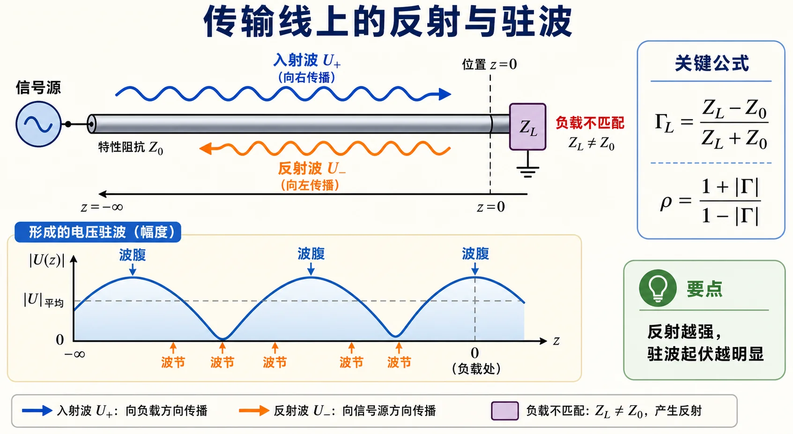

Lec03 · 反射系数、驻波比与输入阻抗§
本节先抓住一句话§
负载不等于传输线自己的 $Z_c$ 时，一部分波会被“弹回来”。反射系数 $\Gamma$ 记录这股反射波的大小和相位，驻波比 $\rho$ 只记录反射强弱，输入阻抗 $Z_{\mathrm{in}}$ 则把某个截面后面的整段线等效成一个阻抗。

图：入射波到达不匹配负载后产生反射，二者叠加形成波腹和波节；$\Gamma$ 管反射强弱与相位，$\rho$ 只管强弱。
反射系数 $\Gamma$§
在某个参考面上，电压反射系数定义为
$$ \Gamma=\frac{U^-}{U^+}. $$
它是复数，所以同时包含两件事：
- $|\Gamma|$：反射波幅度相对于入射波有多大。
- $\angle\Gamma$：反射波相位相对于入射波差多少。
负载处常用
$$ \Gamma_L=\frac{Z_L-Z_c}{Z_L+Z_c}. $$
这个式子很重要，因为它把“负载是否匹配”变成了一个复数：
- $Z_L=Z_c$ 时，$\Gamma_L=0$，无反射。
- 开路时，$\Gamma_L=+1$。
- 短路时，$\Gamma_L=-1$。
沿线移动时，$\Gamma$ 怎么变§
本套讲义采用 $z$ 从负载向源的约定。无耗线上常写
$$ \Gamma(z)=\Gamma_L e^{-j2\beta z}. $$
重点有两个：
- 无耗线上 $|\Gamma(z)|=|\Gamma_L|$，也就是反射强弱不变。
- 相位会随 $z$ 旋转，而且是 $2\beta z$，不是 $\beta z$。
为什么是 2 倍？因为反射关系比较的是入射波和反射波，两者沿相反方向传播，参考面移动一段距离，相对相位改变了两倍。
驻波比 $\rho$§
驻波比定义为线上电压最大值与最小值之比：
$$ \rho=\frac{|U|_{\max}}{|U|_{\min}}. $$
无耗线中它与 $|\Gamma|$ 的关系是
$$ \rho=\frac{1+|\Gamma|}{1-|\Gamma|}. $$
反过来，
$$ |\Gamma|=\frac{\rho-1}{\rho+1}. $$
注意：$\rho$ 只含 $|\Gamma|$，不含 $\Gamma$ 的相位。也就是说，只知道驻波比，不能唯一确定负载阻抗，还需要波腹/波节位置这类相位信息。
输入阻抗 $Z_{\mathrm{in}}$§
输入阻抗是“站在某个位置，向负载方向看进去”的等效阻抗：
$$ Z_{\mathrm{in}}(z)=\frac{U(z)}{I(z)}. $$
它和该处反射系数之间有一个非常常用的关系：
$$ Z_{\mathrm{in}}(z)=Z_c\frac{1+\Gamma(z)}{1-\Gamma(z)}. $$
归一化后更清楚：
$$ \bar Z_{\mathrm{in}}(z)=\frac{Z_{\mathrm{in}}(z)}{Z_c} =\frac{1+\Gamma(z)}{1-\Gamma(z)}. $$
这个式子就是后面 Smith 圆图的底层逻辑。圆图不是新物理，它只是把 $\Gamma$ 和归一化阻抗的关系画出来。
$\lambda/2$ 重复性§
因为无耗线沿线移动时 $\Gamma(z)$ 的相位按 $2\beta z$ 转：
$$ z\to z+\frac{\lambda}{2} \quad\Rightarrow\quad 2\beta z\to 2\beta z+2\pi. $$
相位转了一整圈，所以 $\Gamma$ 回到原值，$Z_{\mathrm{in}}$ 也回到原值。
这就是传输线输入阻抗的 $\lambda/2$ 周期性：
$$ Z_{\mathrm{in}}\left(z+\frac{\lambda}{2}\right)=Z_{\mathrm{in}}(z). $$
波腹和波节§
线上电压最大的位置叫电压波腹，最小的位置叫电压波节。
- 波腹处，入射波和反射波电压相长。
- 波节处，入射波和反射波电压相消。
- 相邻两个电压波腹之间距离是 $\lambda/2$。
- 相邻电压波腹和波节之间距离是 $\lambda/4$。
做反演负载题时，驻波比给你 $|\Gamma|$，波节位置给你 $\angle\Gamma$，两者合起来才能得到负载。
作业怎么答§
Lec03 的题通常按这个顺序写更稳：
- 先由 $Z_L$ 算 $\Gamma_L$，或由 $\rho$ 算 $|\Gamma|$。
- 若给了位置，写 $\Gamma(z)=\Gamma_L e^{-j2\beta z}$。
- 由 $\Gamma(z)$ 算 $Z_{\mathrm{in}}(z)$。
- 最后再解释匹配、波腹、波节或周期性。
对应题解见 第一次作业 · Lec03。
Mini 自检§
- $\rho=3$ 时，$|\Gamma|$ 是多少？
- 只知道 $\rho$，能不能唯一确定 $Z_L$？
- 为什么 $Z_{\mathrm{in}}$ 随位置变，而 $Z_c$ 不随位置变？
- 为什么输入阻抗是 $\lambda/2$ 周期，而不是 $\lambda$ 周期？